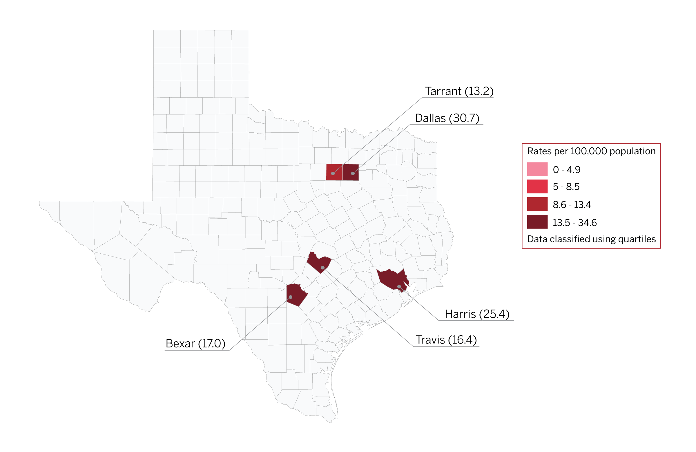

New Diagnoses of HIV Infection in 2018 in the US
- In the United States and 6 dependent areas, the rate of diagnoses of new HIV infection among adults and adolescents was 13.6 per 100,000 population in 2018.
- The rate of diagnoses of new HIV infection for adults and adolescents ranged from zero per 100,000 in American Samoa and the Republic of Palau to 34.6 per 100,000 in the District of Columbia.
- The District of Columbia (i.e., Washington, DC) is a city; use caution when comparing the HIV diagnosis rate in DC with the rates in the states.
- The rate of HIV diagnosis in TX is 15.6 per 100,000 population.

Priority Counties in Texas
- Five counties in Texas have been identified as priority counties by the CDC. These are: Bexar County, Dallas County, Harris County, Tarrant County, and Travis County.

Interactive Maps of New Diagnosis & Person Living With HIV Rates in Texas
- Between 2009 and 2018, the total number of PLWH increased by 46% in Texas.
- Over half (61%) of people living with HIV (PLWH) acquired it through male-male sexual contact.
- By 2018, over half of PLWH were 45 years of age or older.
- A majority of people living with HIV live in urban areas of Texas. The counties with the largest numbers of PLWH were Harris and Dallas, followed by Bexar, Travis, and Tarrant counties.
New Diagnosis Rates
Persons Living With HIV Rates
New Diagnoses Rates Trends in Texas
New Diagnoses Rates in Texas 2007 - 2017 (overall)

New HIV Diagnosis Rates by Race/Ethnicity and Year of Diagnosis, 2009-2018

New Diagnoses Rates in Texas by Age & Race, 2018
New HIV Diagnisis Rates by Age at Diagnosis, 2018

HIV Prevalence Rate by Race/Ethnicity, 2018